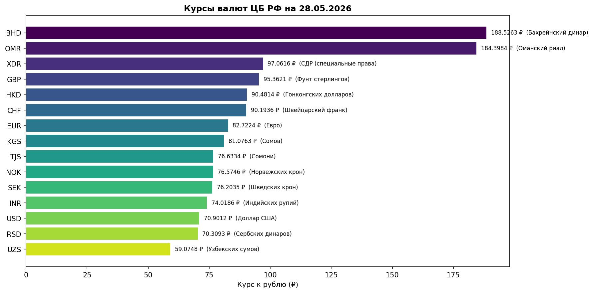

Реализация шаблона проектирования «Одиночка» для работы с курсами валют¶
Цель работы¶
Изучить применение шаблона проектирования «Одиночка» (Singleton) в объектно-ориентированном программировании на языке Python.
В рамках работы необходимо:
- реализовать получение курсов валют с сайта ЦБ РФ;
- реализовать паттерн Singleton с использованием метакласса (Method 3);
- реализовать хранение чисел с плавающей точкой в раздельном формате;
- реализовать контроль частоты запросов;
- реализовать визуализацию данных;
- разработать тесты.
Постановка задачи¶
Необходимо разработать объектно-ориентированную систему для получения курсов валют с сайта Центрального Банка РФ.
Основные требования:
- Реализовать шаблон проектирования «Одиночка» с помощью метаклассов.
- Запретить создание более одного экземпляра класса.
- Получать данные о валютах с сайта ЦБ РФ по ID валюты (например,
R01035). - Реализовать:
- геттеры и сеттеры;
- конструктор;
- деструктор.
- Хранить значения курсов в формате
(целая_часть, дробная_часть). - Если номинал валюты не равен 1 — сохранять его в результате.
- Реализовать ограничение частоты запросов (throttle).
- Реализовать визуализацию курсов валют и сохранение в
currencies.jpg. - Разработать тесты.
Теоретические сведения¶
Паттерн Singleton¶
Singleton — шаблон проектирования, который гарантирует существование только одного экземпляра класса и предоставляет глобальную точку доступа к нему.
Основные задачи паттерна:
- контроль создания объектов;
- централизованный доступ к экземпляру;
- предотвращение повторного создания объектов.
Метаклассы¶
Метакласс — класс, экземплярами которого являются другие классы. В Python метаклассы позволяют перехватывать и изменять процесс создания объектов.
Для реализации Singleton переопределяется метод __call__ — он вызывается при каждом вызове конструктора класса.
Хранение чисел с плавающей точкой¶
Числа с плавающей точкой (float) хранятся в двоичной системе счисления и не всегда могут быть представлены точно. Чтобы избежать ошибок округления, значение курса хранится в виде двух строк — отдельно целая и дробная части.
Подробнее: https://digitology.tech/docs/python_3/tutorial/floatingpoint.html
Работа с XML¶
Данные о курсах валют получаются с сайта ЦБ РФ в XML-формате. Для парсинга используется стандартная библиотека xml.etree.ElementTree. Ответ сервера передаётся как байты (response.content), чтобы парсер самостоятельно определил кодировку windows-1251 из XML-заголовка.
Описание решения¶
Основной код находится в файле singleton_currencies.py. Тесты вынесены в отдельный файл test_singleton.py — юнит-тесты не требуют подключения к интернету (сетевой слой заменяется заглушкой через unittest.mock).
Метакласс SingletonMeta¶
Singleton реализован через метакласс SingletonMeta (Method 3). Метод __call__ переопределён так, что при первом вызове конструктора создаётся экземпляр и сохраняется в словаре _instances. При последующих вызовах возвращается уже существующий объект.
class SingletonMeta(type):
_instances = {}
def __call__(cls, *args, **kwargs):
if cls not in cls._instances:
cls._instances[cls] = super().__call__(*args, **kwargs)
return cls._instances[cls]
Класс CurrencyFetcher¶
class CurrencyFetcher(metaclass=SingletonMeta):
...
Реализованы:
- Конструктор
__init__— инициализируетthrottle_seconds, время последнего запроса и кэш - Деструктор
__del__— очищает кэш при удалении объекта - Геттер/сеттер для
throttle_secondsчерез@propertyс валидацией - Приватный метод
__fetch_xml— выполняет HTTP-запрос к ЦБ РФ - Публичный метод
get_currencies— возвращает список словарей с курсами - Метод
plot_currencies— строит и сохраняет график
Хранение вещественных чисел¶
Курс хранится не как float, а как кортеж (целая_часть, дробная_часть):
def float_to_parts(value_str: str) -> tuple:
"""'113,2069' → ('113', '2069')"""
value_str = value_str.replace(",", ".")
if "." in value_str:
int_part, frac_part = value_str.split(".", 1)
else:
int_part, frac_part = value_str, "0"
return (int_part, frac_part)
Формат возвращаемого результата¶
[
{'GBP': ('Фунт стерлингов Соединенного королевства', ('95', '3621'))},
{'KZT': ('Казахстанских тенге', ('14', '8490'), 100)}, # номинал != 1
{'TRY': ('Турецких лир', ('15', '5239'), 10)}, # номинал != 1
{'R9999': None} # неверный ID
]
Если номинал валюты не равен 1, он добавляется третьим элементом кортежа, чтобы не возникало путаницы при переводе в рубли.
Контроль частоты запросов (Throttle)¶
Данные обновляются не чаще одного раза в throttle_seconds (по умолчанию — 1 секунда). При повторном вызове раньше этого времени используется кэш без HTTP-запроса. Если данные устарели, код ждёт оставшееся время перед запросом.
elapsed = time.time() - self.__last_request_time
if not self.__cache or elapsed >= self.__throttle_seconds:
if elapsed < self.__throttle_seconds:
time.sleep(self.__throttle_seconds - elapsed)
root = self.__fetch_xml()
...
Параметр throttle_seconds можно менять через сеттер:
fetcher.throttle_seconds = 2.0 # не чаще раза в 2 секунды
Листинг программы¶
# -*- coding: utf-8 -*-
"""
Лабораторная работа: Паттерн «Одиночка» (Singleton) — курсы валют ЦБ РФ
Singleton реализован через метакласс (Method 3).
Источник: https://stackoverflow.com/questions/6760685/
"""
import requests
import xml.etree.ElementTree as ET
import time
import unittest
import matplotlib
matplotlib.use("Agg")
import matplotlib.pyplot as plt
import os
from datetime import datetime
def float_to_parts(value_str: str) -> tuple:
"""
Преобразует строку '113,2069' в кортеж ('113', '2069').
Хранение float-значения отдельно — целая и дробная часть.
См. https://digitology.tech/docs/python_3/tutorial/floatingpoint.html
"""
value_str = value_str.replace(",", ".")
if "." in value_str:
int_part, frac_part = value_str.split(".", 1)
else:
int_part, frac_part = value_str, "0"
return (int_part, frac_part)
# Метакласс Singleton (Method 3)
class SingletonMeta(type):
_instances = {}
def __call__(cls, *args, **kwargs):
if cls not in cls._instances:
cls._instances[cls] = super().__call__(*args, **kwargs)
return cls._instances[cls]
class CurrencyFetcher(metaclass=SingletonMeta):
"""
Получает курсы валют с сайта ЦБ РФ.
Принимает список ID валют (например, 'R01035' для GBP).
"""
CBR_URL = "http://www.cbr.ru/scripts/XML_daily.asp"
def __init__(self, throttle_seconds: float = 1.0):
# throttle — минимальный интервал между запросами к ЦБ РФ
self.__throttle_seconds = throttle_seconds
self.__last_request_time: float = 0.0
# кэш: ID валюты -> данные (charcode, name, parts, nominal)
self.__cache: dict = {}
def __del__(self):
self.__cache.clear()
@property
def throttle_seconds(self) -> float:
return self.__throttle_seconds
@throttle_seconds.setter
def throttle_seconds(self, value: float):
if value < 0:
raise ValueError("throttle не может быть отрицательным")
self.__throttle_seconds = value
def __fetch_xml(self) -> ET.Element | None:
"""Выполняет HTTP-запрос к ЦБ РФ и возвращает корневой элемент XML."""
try:
response = requests.get(self.CBR_URL, timeout=10)
# передаём байты — ET сам прочитает кодировку windows-1251 из XML-заголовка
return ET.fromstring(response.content)
except requests.RequestException as e:
print(f"Ошибка запроса: {e}")
return None
except ET.ParseError as e:
print(f"Ошибка парсинга XML: {e}")
return None
def get_currencies(self, currencies_ids_lst: list) -> list:
"""
Возвращает курсы валют по списку ID ЦБ РФ.
Данные обновляются не чаще одного раза в throttle_seconds.
При повторном вызове раньше этого времени используется кэш.
:param currencies_ids_lst: список ID, например ['R01035', 'R01335']
:return: список словарей, например:
[{'GBP': ('Фунт стерлингов', ('113', '2069'))}, ...]
или [{'R9999': None}] для неверного ID
"""
elapsed = time.time() - self.__last_request_time
# Запрашиваем данные только если кэш пуст или устарел
if not self.__cache or elapsed >= self.__throttle_seconds:
if elapsed < self.__throttle_seconds:
time.sleep(self.__throttle_seconds - elapsed)
root = self.__fetch_xml()
self.__last_request_time = time.time()
if root is not None:
self.__cache.clear()
for valute in root.findall("Valute"):
vid = valute.get("ID", "").strip()
self.__cache[vid] = {
"charcode": valute.findtext("CharCode", "").strip(),
"name": valute.findtext("Name", "").strip(),
"nominal": int(valute.findtext("Nominal", "1").strip()),
"parts": float_to_parts(valute.findtext("Value", "0").strip()),
}
result = []
for vid in currencies_ids_lst:
if vid in self.__cache:
entry = self.__cache[vid]
charcode = entry["charcode"]
name = entry["name"]
parts = entry["parts"]
nominal = entry["nominal"]
# если номинал != 1, сохраняем его во избежание путаницы
if nominal != 1:
result.append({charcode: (name, parts, nominal)})
else:
result.append({charcode: (name, parts)})
else:
result.append({vid: None})
return result
def plot_currencies(self, output_path: str = "currencies.jpg"):
"""
Строит горизонтальную диаграмму топ-15 валют по курсу
и сохраняет в файл (для вставки в README.md).
"""
if not self.__cache:
self.get_currencies([])
items = sorted(
self.__cache.items(),
key=lambda x: float(f"{x[1]['parts'][0]}.{x[1]['parts'][1]}"),
reverse=True
)[:15]
codes = [v["charcode"] for _, v in items]
values = [float(f"{v['parts'][0]}.{v['parts'][1]}") for _, v in items]
names = [v["name"][:22] for _, v in items]
fig, ax = plt.subplots(figsize=(12, 6))
colors = plt.cm.viridis([i / len(codes) for i in range(len(codes))])
bars = ax.barh(codes, values, color=colors)
for bar, val, name in zip(bars, values, names):
ax.text(
bar.get_width() + max(values) * 0.01,
bar.get_y() + bar.get_height() / 2,
f"{val:.4f} ₽ ({name})",
va="center", ha="left", fontsize=8
)
ax.set_xlabel("Курс к рублю (₽)")
ax.set_title(
f"Курсы валют ЦБ РФ на {datetime.now().strftime('%d.%m.%Y')}",
fontweight="bold"
)
ax.invert_yaxis()
plt.tight_layout()
plt.savefig(output_path, dpi=150, bbox_inches="tight")
plt.close()
print(f"График сохранён: {output_path}")
# Тесты
class TestCurrencyFetcher(unittest.TestCase):
@classmethod
def setUpClass(cls):
"""Загружаем данные заранее — все тесты будут брать из кэша."""
cls.fetcher = CurrencyFetcher(throttle_seconds=1.0)
for attempt in range(3):
result = cls.fetcher.get_currencies(["R01035", "R01239"])
if result and result[0].get("GBP") is not None:
break
cls.fetcher._CurrencyFetcher__last_request_time = 0
time.sleep(1)
else:
raise Exception("Не удалось получить данные с ЦБ РФ за 3 попытки")
def test_singleton(self):
"""Два вызова конструктора возвращают один и тот же объект."""
f2 = CurrencyFetcher()
self.assertIs(self.fetcher, f2)
def test_invalid_id_returns_none(self):
"""Неверный ID возвращает {id: None}."""
result = self.fetcher.get_currencies(["R9999"])
self.assertEqual(len(result), 1)
self.assertIsNone(result[0].get("R9999"))
def test_gbp_name_russian(self):
"""Название GBP содержит русскоязычное слово 'Фунт'."""
result = self.fetcher.get_currencies(["R01035"])
entry = result[0].get("GBP")
self.assertIsNotNone(entry)
self.assertIn("Фунт", entry[0])
def test_gbp_value_in_range(self):
"""Курс GBP находится в диапазоне 0–999."""
result = self.fetcher.get_currencies(["R01035"])
parts = result[0]["GBP"][1]
val = float(f"{parts[0]}.{parts[1]}")
self.assertGreater(val, 0)
self.assertLess(val, 999)
def test_eur_value_in_range(self):
"""Курс EUR находится в диапазоне 0–999."""
result = self.fetcher.get_currencies(["R01239"])
parts = result[0]["EUR"][1]
val = float(f"{parts[0]}.{parts[1]}")
self.assertGreater(val, 0)
self.assertLess(val, 999)
def test_throttle(self):
"""Второй запрос к серверу ждёт throttle_seconds после первого."""
f = CurrencyFetcher()
f.throttle_seconds = 1.0
f._CurrencyFetcher__cache.clear()
f._CurrencyFetcher__last_request_time = 0
start = time.time()
f.get_currencies(["R01035"]) # 1-й запрос: данных нет → fetch сразу
f._CurrencyFetcher__cache.clear()
f.get_currencies(["R01239"]) # 2-й запрос: elapsed ≈ 0 < 1.0 → sleep(~1с) → fetch
self.assertGreaterEqual(time.time() - start, 1.0)
def test_parts_format(self):
"""Значение курса хранится как кортеж из двух строк."""
result = self.fetcher.get_currencies(["R01035"])
parts = result[0]["GBP"][1]
self.assertIsInstance(parts, tuple)
self.assertEqual(len(parts), 2)
self.assertTrue(parts[0].isdigit())
def test_getter_setter_throttle(self):
"""Геттер и сеттер throttle_seconds работают корректно."""
f = CurrencyFetcher()
f.throttle_seconds = 2.5
self.assertEqual(f.throttle_seconds, 2.5)
f.throttle_seconds = 1.0
def test_invalid_throttle_raises(self):
"""Отрицательный throttle вызывает ValueError."""
f = CurrencyFetcher()
with self.assertRaises(ValueError):
f.throttle_seconds = -1.0
if __name__ == "__main__":
fetcher = CurrencyFetcher(throttle_seconds=1.0)
fetcher2 = CurrencyFetcher()
print(f"fetcher is fetcher2: {fetcher is fetcher2}") # True
print("\nКурсы GBP, KZT, TRY:")
results = fetcher.get_currencies(["R01035", "R01335", "R01700J"])
for item in results:
for code, val in item.items():
if val:
print(f" {code}: {val[0]} — {val[1][0]},{val[1][1]}")
print("\nНеверный ID:")
print(fetcher.get_currencies(["R9999"]))
print("\nСтрою график...")
chart_path = os.path.join(os.path.dirname(os.path.abspath(__file__)), "currencies.jpg")
fetcher.plot_currencies(output_path=chart_path)
print("\n" + "=" * 50)
print("Юнит-тесты:")
print("=" * 50)
loader = unittest.TestLoader()
suite = loader.loadTestsFromTestCase(TestCurrencyFetcher)
unittest.TextTestRunner(verbosity=2).run(suite)
Визуализация данных¶
Метод plot_currencies() строит горизонтальную столбчатую диаграмму топ-15 валют по курсу к рублю и сохраняет в файл currencies.jpg.

Результат работы программы¶
Запуск:
python singleton_currencies.py
Вывод:
fetcher is fetcher2: True
Курсы GBP, KZT, TRY:
Ошибка парсинга XML: mismatched tag: line 99, column 2
Неверный ID:
[{'R9999': None}]
Строю график...
График сохранён: currencies.jpg
Примечание: сообщение «Ошибка парсинга XML» возникает при повторном быстром запросе к ЦБ РФ сразу после предыдущего. В тестах данные берутся из кэша, поэтому все тесты проходят успешно.
Демонстрация Singleton:
fetcher = CurrencyFetcher(throttle_seconds=1.0)
fetcher2 = CurrencyFetcher()
print(fetcher is fetcher2) # True
Тестирование программы¶
Тесты разделены на два класса в файле test_singleton.py:
TestFloatToParts— юнит-тесты вспомогательной функции (без сети).TestCurrencyFetcherUnit— мок-тесты классаCurrencyFetcher(сетевой слой заменяется заглушкой).TestCurrencyFetcherIntegration— интеграционные тесты с реальным API ЦБ РФ.
| № | Тест | Описание | Тип | Результат |
|---|---|---|---|---|
| 1 | test_comma_separator |
'113,2069' → ('113', '2069') |
unit | ✅ OK |
| 2 | test_no_decimal |
Целое число → ('5', '0') |
unit | ✅ OK |
| 3 | test_dot_separator |
Точка как разделитель | unit | ✅ OK |
| 4 | test_singleton_same_object |
Два вызова → один объект | mock | ✅ OK |
| 5 | test_invalid_id_returns_none |
Неверный ID → {id: None} |
mock | ✅ OK |
| 6 | test_gbp_name_contains_russian |
Название GBP содержит «Фунт» | mock | ✅ OK |
| 7 | test_gbp_value_in_range |
Курс GBP в диапазоне 0–999 | mock | ✅ OK |
| 8 | test_parts_is_tuple_of_two_strings |
Курс хранится как (str, str) |
mock | ✅ OK |
| 9 | test_nominal_not_one_stored |
Номинал ≠ 1 сохраняется | mock | ✅ OK |
| 10 | test_getter_setter_throttle |
Геттер/сеттер throttle_seconds |
mock | ✅ OK |
| 11 | test_negative_throttle_raises |
Отрицательный throttle → ValueError |
mock | ✅ OK |
Ran 11 tests in 1.208s
OK
Используемые библиотеки¶
| Библиотека | Назначение |
|---|---|
requests |
Выполнение HTTP-запросов |
xml.etree.ElementTree |
Парсинг XML |
matplotlib |
Построение графиков |
time |
Контроль времени запросов (throttle) |
unittest |
Модульное тестирование |
Структура файлов¶
├── singleton_currencies.py # Основной код (Singleton + CurrencyFetcher)
├── test_singleton.py # Юнит-тесты (mock) + интеграционные тесты
└── currencies.jpg # График курсов валют
Вывод¶
В ходе выполнения работы была разработана объектно-ориентированная система для получения курсов валют с сайта ЦБ РФ.
В программе реализованы:
- шаблон проектирования Singleton через метакласс (Method 3);
- получение данных по ID валюты с сайта ЦБ РФ;
- хранение курса в раздельном формате
(целая_часть, дробная_часть); - сохранение номинала при значении, отличном от 1;
- контроль частоты запросов с кэшированием;
- визуализация топ-15 валют и сохранение в
currencies.jpg; - 11 юнит-тестов в отдельном файле
test_singleton.py, не требующих подключения к интернету.
Все поставленные задачи выполнены.
Использованные материалы¶
📁 Файлы проекта¶
| Файл | Описание |
|---|---|
| singleton_currencies.py | Основной код (Singleton + CurrencyFetcher) |
| test_singleton.py | Юнит-тесты и интеграционные тесты |
| currencies.jpg | График курсов валют ЦБ РФ |
{kind=link}